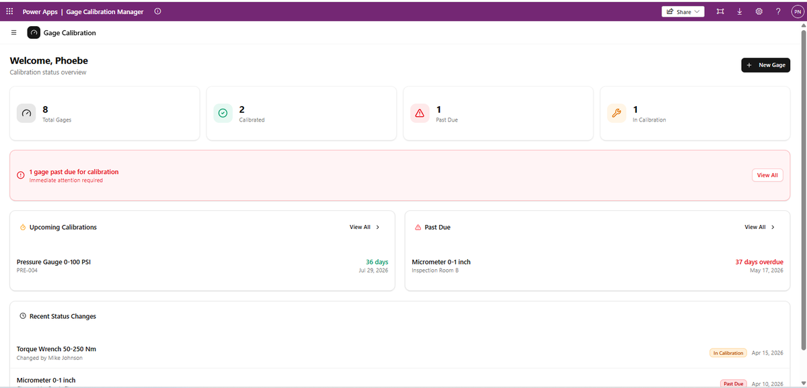
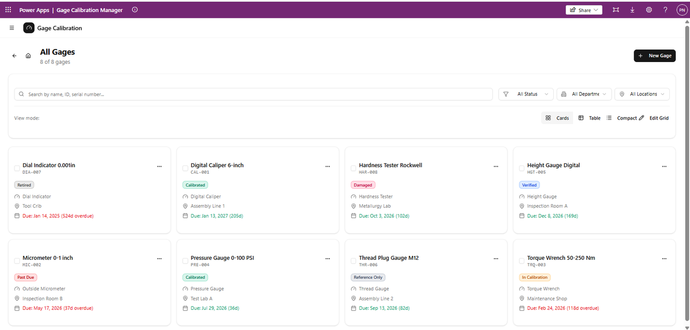
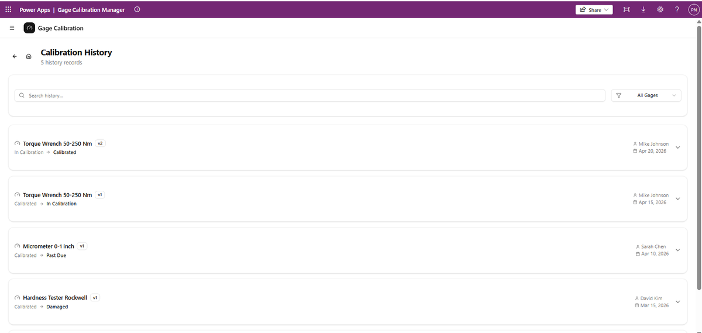
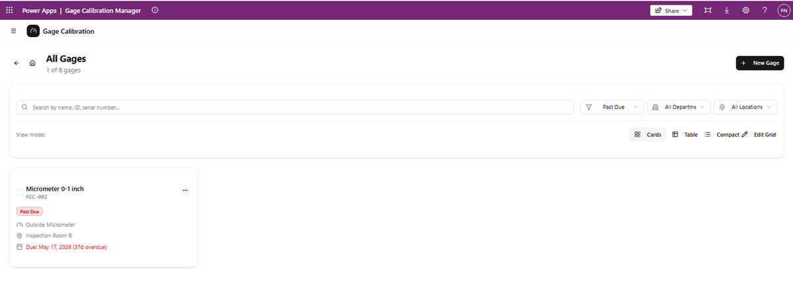
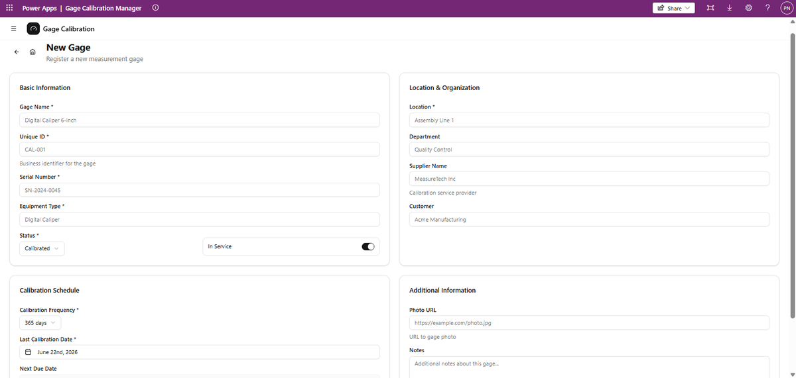

How Copilot Studio Subagents Work — and Why They Change Multi-Agent Design
Why topic-based routing breaks on complex intent, and how a clean hub-and-spoke subagent architecture behaves.
AI Solutions Architect · Power Platform Architect · AI Automation Engineer
From the shop floor to the front office, I design and ship production systems on Microsoft Copilot 365, Copilot Studio, Power Apps, Power Automate, and Dataverse — mold tracking, quality & calibration, traceability, procurement, and inventory. Architecture thinking first, hands-on implementation second, ALM and governance throughout.
I'm Phoebe — an AI Solutions Architect who builds for the realities of a manufacturing operation: molds moving through rework and release, gages that must stay in calibration, parts that need full serial traceability, purchase requests that need real approvals, and inventory that has to be right or the line stops.
I work across the full Microsoft AI & low-code stack — Copilot 365 agents, Cowork skills, plugins, and Notebooks; multi-agent Copilot Studio; Power Apps (canvas, model-driven, and code apps); Power Automate flows and approvals; Dataverse modeling, plugins, and Dataverse MCP business skills; and AI Builder prompts (evaluate, classify, decide-next). Every build starts from a real business problem and ends in something the shop floor and the front office actually use.
I also teach. On YouTube and at d365phoebe.com I break down Power Apps, Power Automate, Dataverse, Copilot Studio, and AI tooling so other builders can skip the dead ends I already hit.
Grouped by domain — each card is a real pattern I've architected and implemented in a manufacturing environment, with the thinking and the build guidance behind it.
Declarative Copilot 365 agents, Cowork skills, plugins, and Notebooks that extend Microsoft 365 Copilot with grounded, task-specific manufacturing capabilities.
Parent/orchestrator router agents with child and connected subagents — choosing between instruction skills, Power Automate flows, direct Dataverse, and MCP, with built-in guardrails.
Reusable "Run a Prompt" building blocks wired into agents — evaluator, classifier, and decide-next-action prompts that give agents reliable, structured reasoning over manufacturing data.
Fixed Agent 365 / MCP Management sign-in failures (missing Agent Tools service principal, preauthorization consent) and designed premium MCP Apps UI widgets from Run-a-Prompt JSON.
Dataverse-backed model-driven apps with custom command bars (Ribbon Workbench), enable/display rules, editable subgrids, and declarative MCP Apps agents over the same data.
Code-first Power Apps (React/TypeScript + Power Platform SDK) integrated with custom APIs and connectors — surfacing Dataverse, SharePoint, and Copilot Studio data in a tailored UI.
Generative pages to rapidly build custom, AI-assisted page experiences inside model-driven apps — accelerating UI delivery without sacrificing the Dataverse data model.
Responsive canvas apps connected to Dataverse, SharePoint, and custom connectors — built for barcode scanners, operators, and real field and operations use.
Cloud flows and approval workflows for the work nobody wants to chase — scheduled reminders, multi-level sign-offs (QC, engineering, production), external API calls, and JSON parsing.
Consumption & Standard Logic App workflows exposed as Power Platform custom connectors, so HTTP-trigger flows run as tools in Copilot Studio, Power Automate, and Power Apps.
Fronted flows with Azure API Management for subscription-key auth, then wired App Insights + Log Analytics KQL to debug the classic "works in Power Apps, 404s in Copilot Studio" failures.
Migrated legacy registers into Dataverse with dataflows — duplicate detection, alternate keys to enforce uniqueness, validation rules, and post-migration integrity checks.
Instrumented Copilot Studio agents and Logic Apps with Application Insights — then wrote the KQL that actually explains a failure: custom events, user messages, node/topic execution, errors, and session trends.
Designed Dataverse tables, relationships, security roles, and alternate keys, and wrote C# plug-ins on the event pipeline for server-side validation and logic that can't live in a flow.
SharePoint document libraries for controlled release and traceability, and a retrieval pattern that reuses the existing SharePoint search index for grounded agent answers — no embeddings pipeline.
Power BI reports and SharePoint dashboard views over Dataverse — daily scan targets and trends, QC dashboards, and KPIs that turn operational data into decisions leadership can act on.
Import-ready Power Automate & Dataverse solution packaging, plus reviewers that audit ambiguous tool/skill descriptions and detect unused tools — keeping agent ecosystems lean.
A complete inventory across Power Platform, Copilot, Dataverse, SharePoint, Azure, Power BI, and Dynamics 365 Sales — each delivered with the same method: discovery & process mapping, security-first data modeling, iterative build, automation & integration, analytics, and ALM. Filter by keyword or expand any area to browse.
No projects match that term — try another keyword.
Real systems I designed, built, deployed, and drove to adoption on the floor.
The problem
Molds moved between facilities and through rework with no reliable system of record. NCR/rework/use-as-is decisions, demold release, and the sign-offs they required were handled on paper and in people's heads — so molds got lost, reworked twice, or released without approval.
My contribution
Stack
Outcome
A single source of truth for mold status and rework, with enforced approvals and a daily scan trend leadership can watch — replacing paper hand-offs with an auditable release process.
The problem
Procurement approvals lived in email threads, spreadsheets, and manual reminders — no central status, threshold enforcement by memory, sensitive financial fields overexposed, and no audit trail or cycle-time visibility. The real gap was governance: approvals were treated as messages, not controlled business records.
My contribution
Stack
Outcome
A scalable procurement-governance platform: structured records, an automated and policy-enforced approval path, record-level security on sensitive data, audit-ready evidence, and leadership visibility into procurement performance — replacing email as the process engine.
The problem
Engineering drawings moved from pre-released to released by hand, with file-locking confusion and no controlled, traceable release — risking the wrong revision reaching the floor.
My contribution
Stack
Outcome
Controlled, traceable engineering releases with role-based access — and a continuous-improvement loop for onboarding new users into the right security context.
The problem
Gage calibration was tracked in a legacy register full of duplicates and inconsistent IDs — a compliance risk when every gage must be uniquely identified and kept in calibration.
My contribution
Stack
Outcome
A clean, unique, compliance-ready calibration register — duplicates removed at the source and uniqueness enforced by the platform, not by hope.
The problem
Process and engineering knowledge already lived in SharePoint — but standing up a separate embeddings pipeline meant a second source of truth to sync and keep aligned.
My contribution — the pattern
Path: scope.Stack
Outcome
Grounded, security-trimmed answers from documents that stay where they already live — no content sync, no duplicate index, no second source of truth.
The problem
Project teams needed status, risks, and approvals in one place — and wanted to drive it conversationally from Microsoft 365 Copilot instead of clicking through screens.
My contribution
Stack
Outcome
A conversational project hub where Copilot reads project state and renders interactive widgets — turning a click-heavy app into a guided, agent-driven experience.
The problem
Plant leadership spent hours each week assembling operations status — NCRs, supplier delays, maintenance, and meeting prep — from scattered email, Teams, and SharePoint sources.
My contribution
Stack
Outcome
Weekly operations and quality summaries that used to take hours now assemble automatically, and managers can ask OpsPilot for an NCR trend or briefing on demand.
Deep dives and field notes on Copilot Studio, Power Platform, and Azure — the same patterns behind the projects above.
Why topic-based routing breaks on complex intent, and how a clean hub-and-spoke subagent architecture behaves.
The real difference, why the wrong choice breaks multi-turn follow-ups, and a decision framework that keeps context.
Wiring an agent to App Insights and the exact queries for events, user messages, node execution, errors, and trends.
Why the SAS signature is a risk, and a full walkthrough of a rotatable subscription-key (or OAuth) gateway.
Hosting, file structure, connection and billing models — plus editing a Standard app locally in VS Code and checking telemetry.
What a Microsoft 365 Copilot license actually includes, and a clear when-to-use-each decision guide.
The admin-center page most orgs miss — org and per-user spending limits, alerts, billing methods, and credit requests.
Create and publish up to 1,000 org prompts, pin the top 4, bulk-import via CSV, and track adoption analytics.
Selected screens from the builds — click any image to enlarge. Each project holds up to 10.

img/gage-1.png
img/gage-2.png
img/gage-3.png
img/gage-4.png
img/gage-5.png
img/mold-1.png
img/mold-2.png
img/mold-3.png
img/purchase-1.png
img/purchase-2.png
img/purchase-3.pngUsing the Dataverse MCP server, I expose manufacturing tables as natural-language skills — so a Copilot agent can answer operations questions and act on records without anyone opening the ERP.
Register an app with the Dynamics CRM → mcp.tools permission and a client secret; grant admin consent.
On a Managed Environment, enable Dataverse MCP, add an application user, and grant a security role scoped to the tables.
Wire an OAuth client and package the MCP endpoint as a Copilot plugin/connector via the OAuth vault.
Upload to the agent surface (Copilot Studio or Copilot 365 Cowork) and enable the skill in Sources & Skills.
How they're triggered: the agent's orchestrator matches a user's natural-language intent to the skill's description and synonyms, then the Dataverse MCP runs a security-trimmed query over the table and returns structured rows — optionally summarized by an AI Builder Run-a-Prompt. Read-only by default and always governed by the caller's Dataverse security roles, so no one sees data they shouldn't.
| Dataverse table | Business skill | Manufacturing problem it solves | Example trigger |
|---|---|---|---|
pn_inventoryonhand | On-Hand Stock Check | Planners & buyers lose time in the ERP; a missed stockout stops the line. | "How much of part X is on hand right now?" |
pn_inventoryhistory | Inventory Movement Trace | Shrinkage, reconciliation, and audit trails for every stock movement. | "Show all movements for part X this week." |
pn_jobdetail | Job / Work-Order Status | Supervisors chase job progress across shifts and systems. | "What's the status of job 10482?" |
pn_jobserial | Serial Traceability | Recall, warranty, and quality traceability from serial to job. | "Which job produced serial 00219?" |
pn_orderhistory | Order History Lookup | Customer service and demand planning need fast order context. | "What did customer Y order last quarter?" |
pn_po_line | Open PO-Line Status | Expediting; a late supplier line can idle a work center. | "Open PO lines for supplier Z arriving this week." |
cr38e_purchaseorderhistory | PO & Spend History | Supplier spend analysis and sourcing decisions. | "Total spend with supplier Z this year." |
pn_quality | Quality / NCR Insight | Defect trends, escalation, scrap reduction, and CAPA prep. | "Top defects on line 3 this month." |
Skills compose: a single ask like "Is part X ready to run job 10482?" can chain the on-hand check, the open PO-line status, and the quality skill into one grounded answer.
How I move solutions safely from dev to production — source control, automated pipelines, and a clean environment strategy.
Solutions unpacked with the Power Platform CLI (pac) and committed to Git — GitHub and Azure Repos. Managed vs. unmanaged layering, semantic versioning, and reviewable pull requests.
In-product Power Platform Pipelines for governed dev → test → prod promotion, with approvals between stages and consistent solution deployment.
Build and release pipelines using the Power Platform Build Tools — automated export, pack, and import of solutions, with quality gates and approvals before production.
Connection references and environment variables keep solutions environment-agnostic, so the same managed solution deploys cleanly everywhere — no hard-coded endpoints.
Have a shop-floor, quality, or Power Platform challenge? I'd love to hear about it.